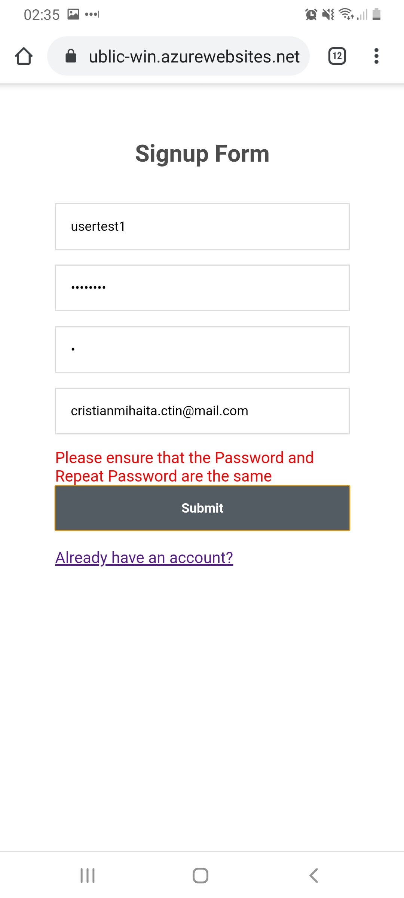
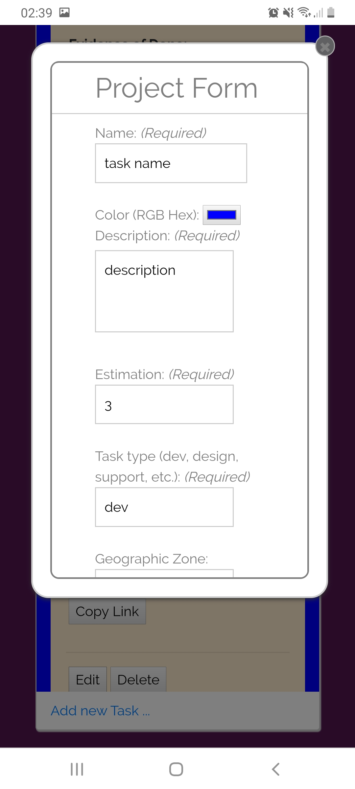

Functional flow
Live link: cristasor-public-win.azurewebsites.net
Create an user:
Click Create account ... link
Enter credentials and email. All fields are required.
Password must be a min of 8 characters
Create project:
To create a new Project, click the "Click to Add Project" button.
This will open the form to add info about the new Project (all field are required) You can choose a color to represent this project
Add a task to the project:
To add a task to a project, click on the project button, and enter the project task list:
Click on the Add new Task .... This will open a Task creation form:
The required fileds are:
- Name
- Color
- Description
- Estimation (float number)
- Task type
- Geographic Zone
- Time Zone
- Work Domain
After all that, click the "Submit button".
Now the task should be added to the project.
Click on the task to expand or collapse.
Edit or Delete Task:
At the bottom of any task that you created, there is a button for editing or deleting the task. Clicking the edit will open the form with the current editable data.
Public link:
Every task has a publicly accessible link. Next to it it's a button that copies the link to the client clipboard.
The link will redirect the user to a page containing the task details. Only logged users can access!
At the bottom there are 3 buttons. Any user can accept any task. Once the task has been accepted by an user, it can't be accepted by others.
Once an user accepts, his/her id will appear unde "Is working"
Once an user accepts, on he/she can abandon or finish.
If user finished, and has evidence, click "Finish" button. The evindece will be available under the "Evidence of Done":

Sign out
To sign out, click the "Log off" button (if on mobile, the button is under the menu button)
Progressive Web App
If you are on a mobile device with a supported Browser, you will get a notification asking if you want to add the app to the home screen:
If you accepted, now the web app will run like any other native app.